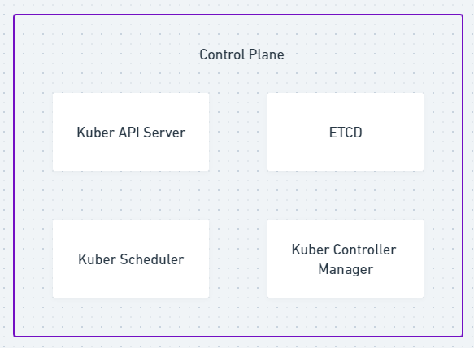

Deploy em containers
Passo 1: Escrever um Dockerfile ou um docker-compose.yml
Esses arquivos dizem ao docker como ele deve criar o container no qual a aplicação será executada.
Passo 2: Desenvolver a aplicação dentro do container criado pelo Docker
Nesse passo crio a primeira versão da minha aplicação.
Kubernetes (K8s)
O Kubernetes monta containers assim como o Docker, mas ele também tem outras funcionalidades, como por exemplo criar mais de um mesmo container possibilitando assim a escalabilidade da aplicação.
ReplicaSet
O ReplicaSet é uma funcionalidade do Kubernetes na qual posso definir quantas réplicas de um mesmo container o Kubernetes deve criar para a minha aplicação.
LoadBalance
O LoadBalancer é outra funcionalidade do Kubernetes, ele é responsável por dividir a carga de responder requisições entre as diversas réplicas do container criadas pelo Kubernetes.
Cluster Kubernetes
O cluster Kubernetes é formado por dois tipos de máquinas, Control Planes e Worker Nodes.
- Control Plane: Responsável por gerir Worker Nodes. É necessário ter mais de um Control Plane no cluster
Kubernetes para garantir a resiliência. Um Control Plane é formado por quatro serviços: O Kube API Server,
o Kube Scheduler, um ETCD e o Kube Controller Manager como mostra a figura abaixo.

- Worker Node: É responsável por executar os containers.